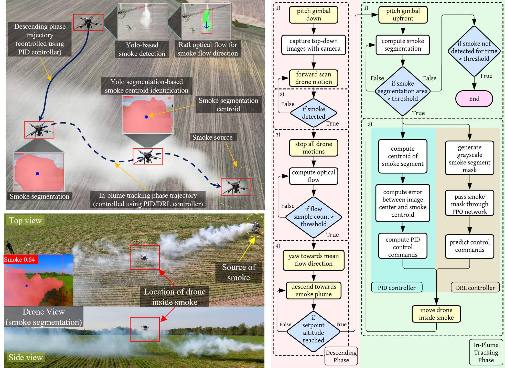
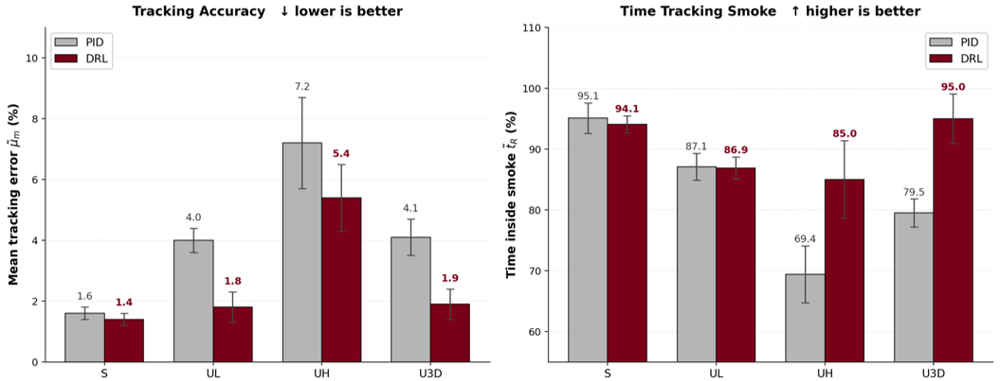

Autonomous Drone for Dynamic Smoke Plume Tracking
Published in: 2025 IEEE International Conference on Robotics and Automation (ICRA)
- 1Minnesota Robotics Institute, University of Minnesota
- 2Mechanical Engineering, University of Minnesota
- 3Saint Anthony Falls Laboratory, University of Minnesota


Abstract
This paper presents a novel autonomous drone-based smoke plume tracking system capable of navigating and tracking plumes in highly unsteady atmospheric conditions. The system integrates advanced hardware and software, along with a comprehensive simulation environment, to ensure robust performance in controlled and real-world settings. Equipped with a quadrotor platform, high-resolution imaging systems, and an advanced onboard computing unit, the drone performs precise maneuvers while accurately detecting and tracking dynamic smoke plumes under fluctuating conditions. Our software implements a two-phase flight operation: descending into the smoke plume upon detection and continuously monitoring the smoke's movement during in-plume tracking. Leveraging PID control and a Proximal Policy Optimization Deep Reinforcement Learning (DRL) controller enables adaptation to plume dynamics. Simulations using Unreal Engine evaluate performance under various smoke-wind scenarios, from steady flow to complex, unsteady fluctuations, showing that while the PID controller performs adequately in simpler scenarios, the DRL-based controller excels in more challenging environments. Field tests corroborate these findings. This system opens new possibilities for drone-based monitoring in areas like wildfire management and air quality assessment. The successful integration of DRL for real-time decision-making advances autonomous drone control for dynamic environments.
Methodology

Overview: Our autonomous drone-based smoke tracking system utilizes a quadrotor primarily equipped with an RGB camera and a Nvidia Jetson Orin Nano for real-time computing. The system supports YOLO-based smoke localization and PID/DRL-based drone control algorithms and operates in two phases: the descending phase and the in-plume tracking phase. In the descending phase, the drone positions itself above the smoke plume using YOLO-based smoke detection, descends inside the plume in the smoke dispersion region, and keeps the heading opposite to the smoke flow direction i.e towards the source. The system then transitions to the in-plume tracking phase, where YOLO-based segmentation localizes the smoke in the frame. Utilizing this localization information, the trajectory is then dynamically adjusted using a combination of PID and DRL (PPO) controllers to keep the drone within the plume, even under shifting wind conditions. This enables continuous tracking of the densest plume regions in dynamic environments.
Short Demonstration
Detailed Demonstration
Results

The evaluation results demonstrate that the DRL controller outperforms the PID controller in various dynamic smoke tracking scenarios. In steady smoke flow, DRL achieves a slightly better mean tracking error (1.4%) compared to PID (1.6%). In more challenging conditions, such as high-frequency unsteady smoke flow (UH), DRL reduces the normalized maximum distance from the mean line to 12.3%, compared to PID's 18.6%, and maintains 85.0% of the time inside the plume, significantly better than PID's 69.4%. Under 3D fluctuations (U3D), DRL also shows superior tracking, with a mean tracking error of 1.9%, while PID's is 4.1%. These results highlight DRL's enhanced adaptability and accuracy in tracking the smoke plume across fluctuating and unpredictable conditions.
Citation
@INPROCEEDINGS{11128144,
author={Pal, Srijan Kumar and Sharma, Shashank and Krishnakumar, Nikil and Hong, Jiarong},
booktitle={2025 IEEE International Conference on Robotics and Automation (ICRA)},
title={Autonomous Drone for Dynamic Smoke Plume Tracking},
year={2025},
volume={},
number={},
pages={303-309},
keywords={Wildfires;PI control;Tracking;Software;Real-time systems;PD control;Robotics and automation;Monitoring;Drones;Quadrotors},
doi={10.1109/ICRA55743.2025.11128144}}